WES Kyocera - Prérequis et configuration préalable
Configurer les ports
Les ports réseau à ouvrir pour permettre le fonctionnement sont les suivants :
| Marque | Source | Port | Protocole | Cible |
| Kyocera | Service Watchdoc |
TCP 8080 |
HTTP HTTPS |
Périphérique d'impression |
Configurer les périphériques
La configuration du WES Kyocera doit être précédée d'une configuration sur le périphérique .
La configuration du WES V3 Kyocera sur les périphériques de séries 3 et ultérieures nécessite l'activation de paramètres de sécurité depuis l'interface web d'administration de ce dernier puis l'installation préalable de l'application WES sur le périphérique à l'aide de l'outil Kyocera NetViewer.
Activer les paramètres de sécurité
Accéder à l'interface de configuration du périphérique
-
Depuis un navigateur, accédez au site web d'administration du périphérique http://device_ip.
-
Authentifiez-vous en tant qu'administrateur.
Activer le SSL et IPPS
-
Cliquez sur l'entrée de menu Paramètres de sécurité, puis Sécurité réseau.
-
Dans la section Paramètres de protocole sécurisé, activez le protocole SSL.
-
Pour le paramètre IPP, placez le bouton sur IPP sur SSL uniquement :
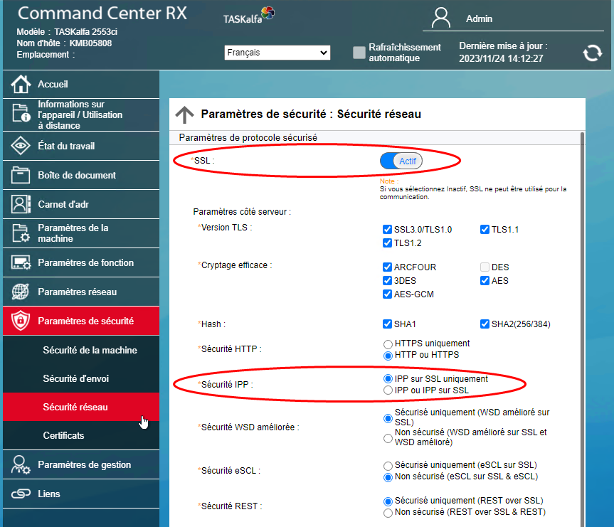
-
Cliquez ensuite sur Soumettre (en bas de page) pour enregistrer les paramètres définis.
-
Cliquez ensuite sur l'entrée de menu Paramètres réseau, puis sur Protocole.
-
Dans la section Protocoles d'impression, activez le protocole IPP sur SSL et vérifiez que le numéro de port indiqué est 443 (par défaut) :
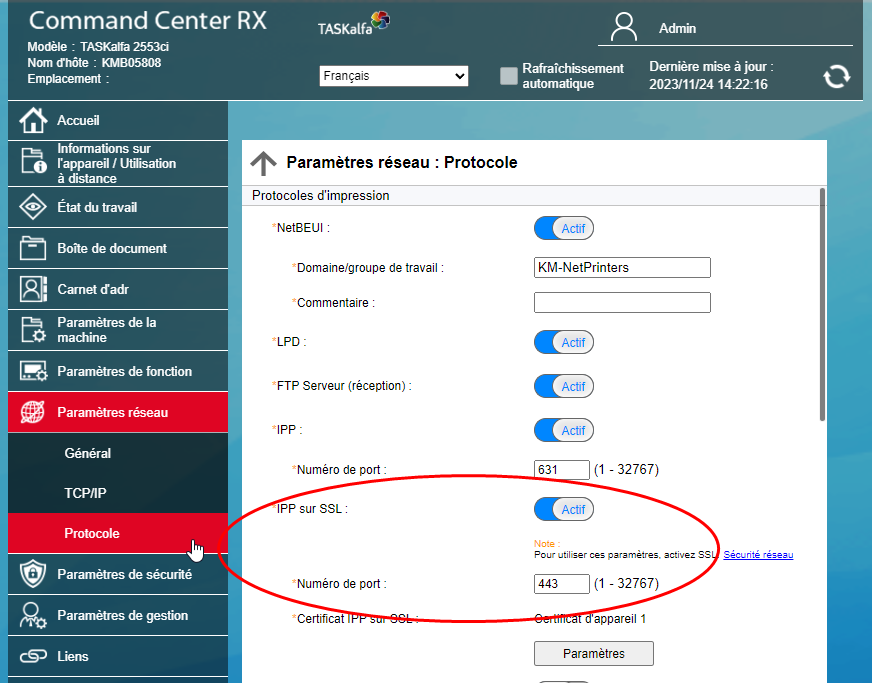
-
Cliquez ensuite sur Soumettre (en bas de page) pour enregistrer les paramètres définis.
-
Depuis l'entrée de menu Paramètres de gestion, cliquez sur Réinitialiser,
-
Cliquez ensuite sur Redémarrer l'appareil et Redémarrer le réseau pour tenir compte des modifications apportées au paramétrage :
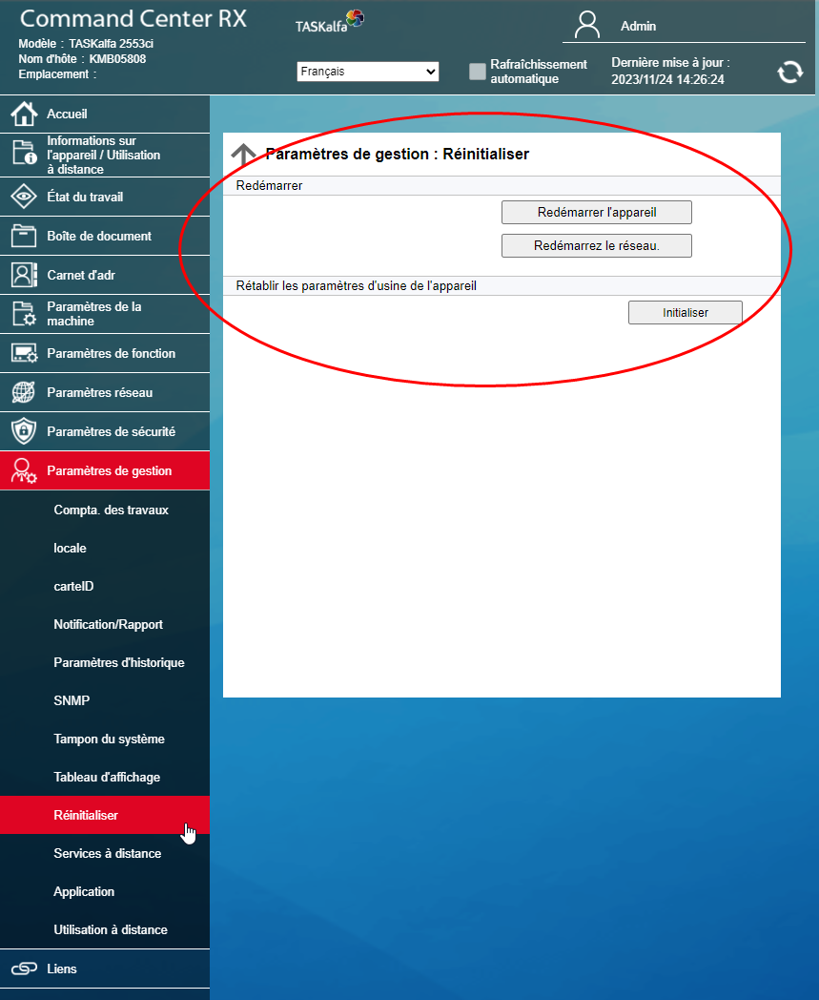
→ Après cette opération sur le réseau, le périphérique est prêt pour l'installation.
Activer le SNMP V3
Cette étape est uniquement obligatoire pour la configuration de la fonction Scan to me (numérisation avec envoi des documents par mail) ou si vous souhaitez utiliser Kyocera Net Viewer pour configurer le périphérique.
-
Cliquez sur l'entrée de menu Paramètres de gestion > SNMP.
-
Paramétrez le SNMPv3 comme ci-dessous :
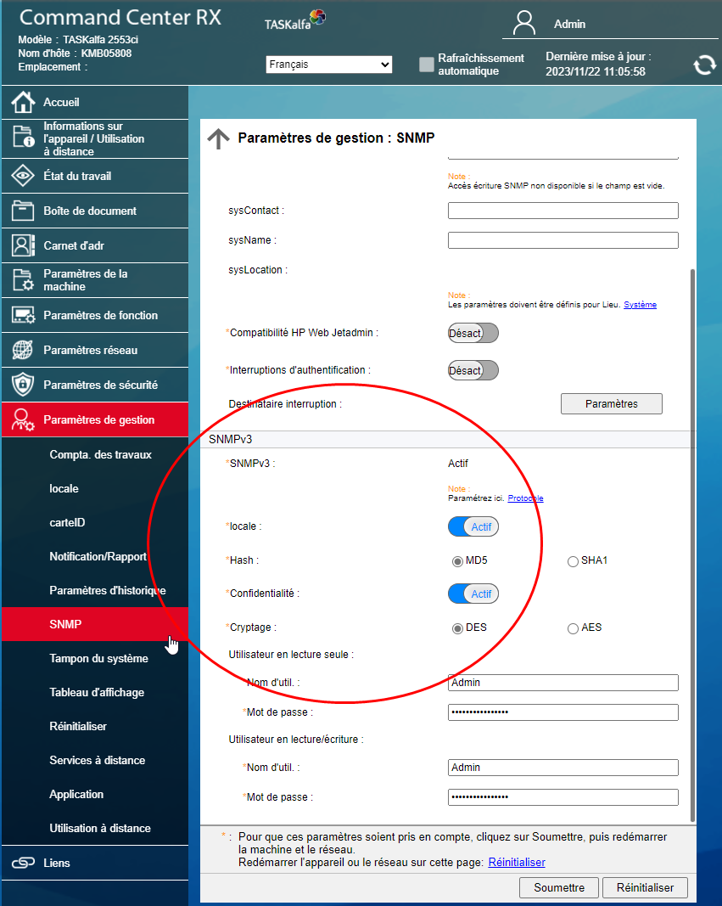
Activer le lecteur de badges
Pour installer un lecteur de badges sur le périphérique Kyocera, il est nécessaire de disposer d'une licence valide.
Il est également nécessaire de débloquer le paramètre USB Host.
-
Cliquez sur l'entrée de menu Paramètres de sécurité, puis Sécurité de la machine.
-
Pour le paramètre USB Host, vérifiez que l'option Déverrouiller est cochée :
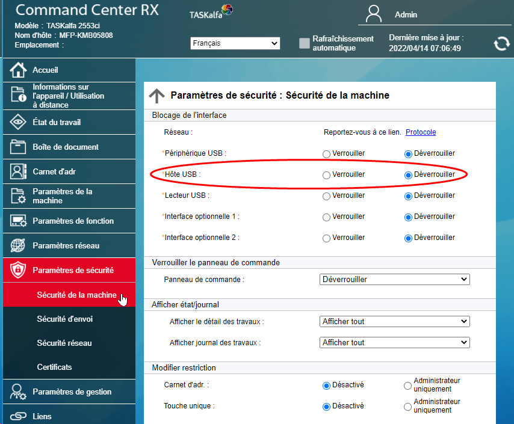
Installer l'application WES sur le périphérique à l'aide de Kyocera NetViewer
Prérequis
Le fichier d'application WES est présent dans le dossier d'installation de l'application Watchdoc (Watchdoc_Setup_[n°version]\Redist). Repérez l'endroit où il est enregistré ou téléchargez-le dans votre environnement de travail pour en disposer quand ce sera nécessaire.
Télécharger Kyocera NetViewer
-
Rendez-vous sur le site Kyocera (EN) https://www.kyoceradocumentsolutions.us/en/products/software/KYOCERANETVIEWER.html
-
Téléchargez Kyocera Net Viewer.
-
Décompressez le dossier knv.zip.
-
Lancez l'exécutable KmInstall.exe (sélectionnez la version correspondant à votre environnement de travail).
-
Suivez les instructions jusqu'à finaliser l'installation :
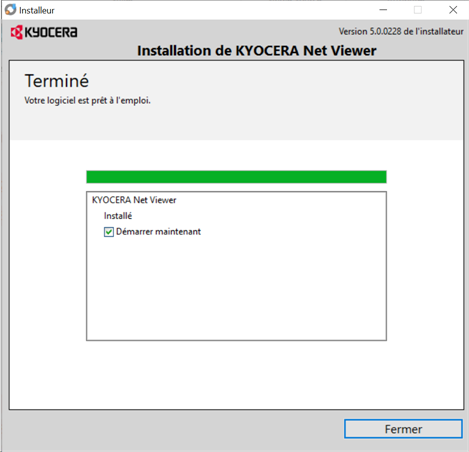
Utiliser Kyocera NetViewer
-
Une fois lancée, l'application propose un Assistant d'ajout de périphérique.
-
Cliquez, au choix, sur le bouton :
-
Rapide pour laisser l'outil rechercher automatiquement tous les périphériques installés sur le réseau.
-
Perso pour choisir un moyen de découverte des périphériques d'impression :
-
par recherche sur le réseau local
-
par saisie de l'adresse IP
-
par plage d'adresses IP
-
-
-
Si vous avez opté pour Rapide, l'exécutable lance une opération de Découverte. Validez la découverte lorsqu'elle est terminée :
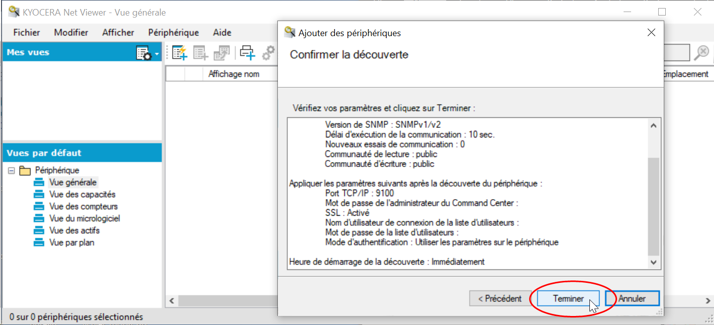
Activer l'application WES
-
Dans la liste des périphériques d'impression trouvés, sélectionnez le périphérique Kyocera sur lequel vous souhaitez installer le WES.
-
Cliquez sur l'entrée de menu Périphérique > Avancé > Gérer les applications :
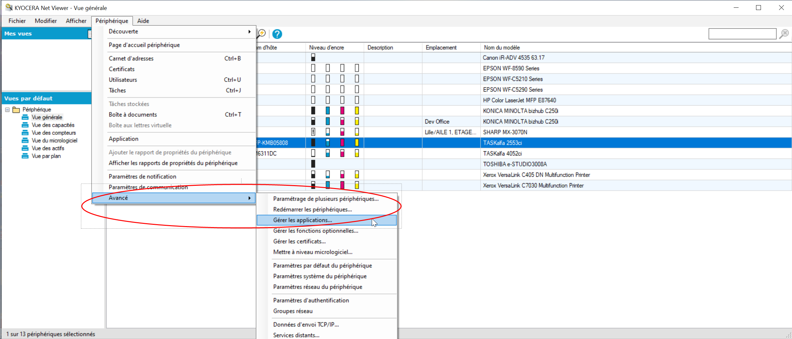
-
dans la boîte Gérer les applications, sélectionnez Installer, puis cochez la case Activer l'application après installation :
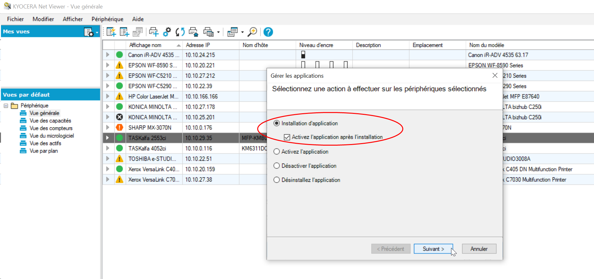
-
Parcourez ensuite votre espace de travail pour y sélectionner le package d'installation préalablement téléchargé (WesKyoceraV3_std_[n°version]) :
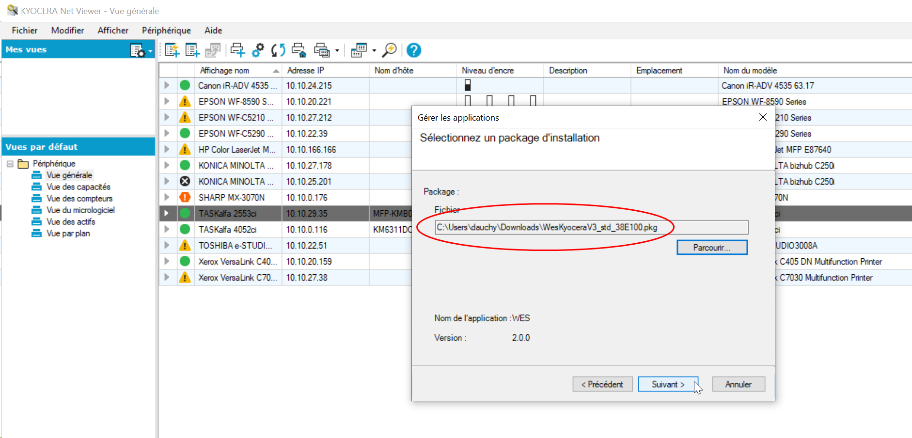
-
Cliquez sur Terminer dans la boîte de confirmation pour installer l'application :
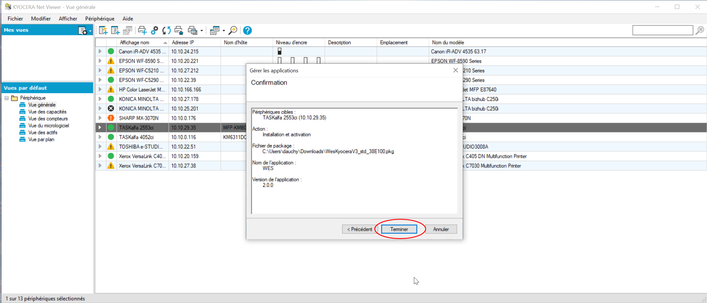
Activer l'application WEScan
Si vous souhaitez utiliser le module WEScan, il convient de l'installer sur le périphérique préalablement à l'aide du fichier d'application (présent dans le dossier d'application Watchdoc_Setup_[n°version]\Redist).
-
Cliquez sur l'entrée de menu Périphérique > Avancé > Gérer les applications :
-
dans la boîte Gérer les applications, sélectionnez Installer, puis cochez la case Activer l'application après installation
-
Parcourez ensuite votre espace de travail pour y sélectionner le package d'installation préalablement téléchargé (WeScanKyocera_std_[n°version].pkg)
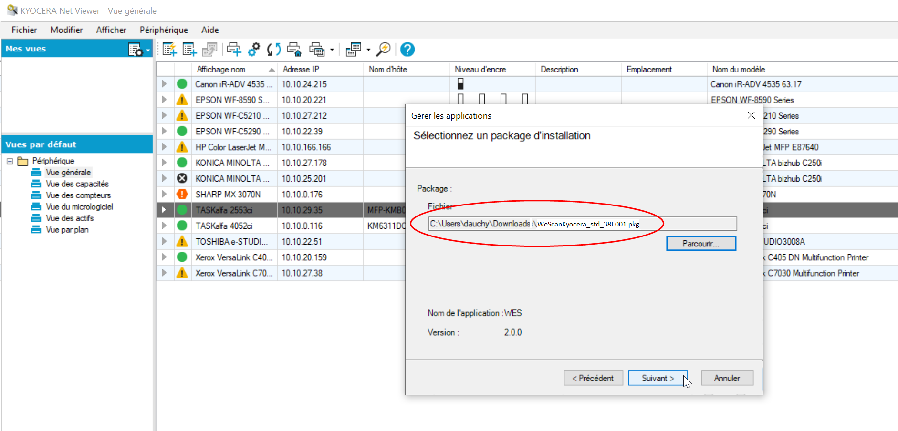
-
Cliquez sur Terminer dans la boîte de confirmation pour installer l'application.